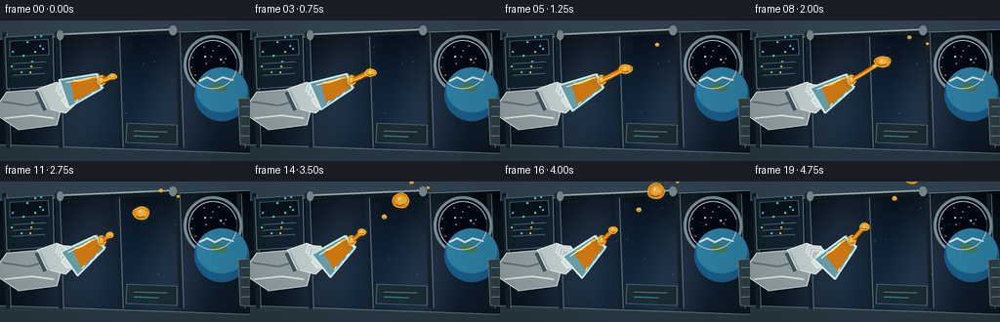
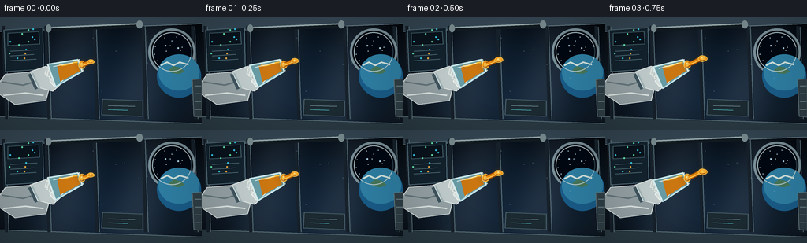
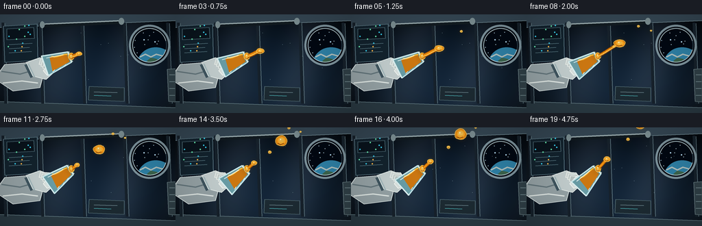
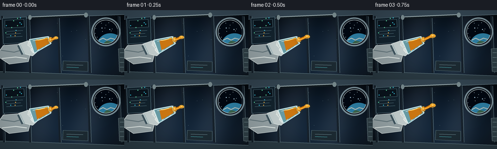

CODING AGENTS AS PIXEL WORLD MODELS
traex/GPT-5.6-Sol · phygen_002
点击播放 · 原生 RGB 像素
逐轮保存的候选
回放视频、检查图与代码变化。
每份候选均可单独播放。实际图片检查记录在下方工具轨迹中。
候选 01播放与检查图
点击播放 · 原生 RGB 像素


展开代码变化
--- 上一保存版本
+++ 本次保存版本
@@ -0,0 +1,226 @@
+from pathlib import Path
+import math, random
+import numpy as np
+from PIL import Image, ImageDraw, ImageFilter, ImageFont
+import artifact_io
+
+W,H,N = 256,144,20
+S=4
+random.seed(12)
+
+# deterministic background details
+stars=[(random.randint(188,241),random.randint(14,62),random.choice([1,1,1,2])) for _ in range(22)]
+panel_lights=[(random.randint(9,50),random.randint(15,55),random.choice([(56,210,240),(104,235,175),(247,181,73)])) for _ in range(13)]
+
+def sc(v): return int(round(v*S))
+def pts(a): return [(sc(x),sc(y)) for x,y in a]
+def ellipse(d,box,fill,outline=None,width=1): d.ellipse(tuple(sc(x) for x in box),fill=fill,outline=outline,width=sc(width))
+def line(d,xy,fill,width=1,joint='curve'): d.line(pts(xy),fill=fill,width=sc(width),joint=joint)
+def polygon(d,xy,fill,outline=None): d.polygon(pts(xy),fill=fill); outline and d.line(pts(xy+[xy[0]]),fill=outline,width=sc(1),joint='curve')
+
+def bezier(p0,p1,p2,p3,n=40):
+ out=[]
+ for q in np.linspace(0,1,n):
+ a=(1-q)**3; b=3*(1-q)**2*q; c=3*(1-q)*q*q; e=q**3
+ out.append((a*p0[0]+b*p1[0]+c*p2[0]+e*p3[0],a*p0[1]+b*p1[1]+c*p2[1]+e*p3[1]))
+ return out
+
+def oil_blob(im, cx,cy,rx,ry,phase=0, alpha=255):
+ # luminous halo
+ glow=Image.new('RGBA',im.size,(0,0,0,0)); gd=ImageDraw.Draw(glow)
+ gd.ellipse((sc(cx-rx-2),sc(cy-ry-2),sc(cx+rx+2),sc(cy+ry+2)),fill=(255,163,23,48))
+ glow=glow.filter(ImageFilter.GaussianBlur(sc(3)))
+ im.alpha_composite(glow)
+ # softly irregular surface-tension contour
+ contour=[]
+ for j in range(64):
+ a=2*math.pi*j/64
+ wob=1+.035*math.sin(3*a+phase)+.018*math.sin(5*a-phase*.7)
+ contour.append((cx+rx*wob*math.cos(a),cy+ry*wob*math.sin(a)))
+ lay=Image.new('RGBA',im.size,(0,0,0,0)); d=ImageDraw.Draw(lay)
+ polygon(d,contour,(180,91,4,alpha))
+ ellipse(d,(cx-rx*.88,cy-ry*.88,cx+rx*.87,cy+ry*.88),(239,145,19,alpha))
+ ellipse(d,(cx-rx*.62,cy-ry*.69,cx+rx*.71,cy+ry*.62),(246,171,43,alpha))
+ ellipse(d,(cx-rx*.43,cy-ry*.54,cx+rx*.42,cy+ry*.30),(255,197,75,min(alpha,230)))
+ ellipse(d,(cx-rx*.25,cy-ry*.39,cx-rx*.02,cy-ry*.14),(255,245,197,min(alpha,245)))
+ # dark refracted underside and razor rim
+ line(d,[(cx-rx*.62,cy+ry*.48),(cx-rx*.18,cy+ry*.72),(cx+rx*.44,cy+ry*.48)],(153,72,5,min(alpha,170)),1)
+ line(d,contour+[contour[0]],(255,202,79,min(alpha,230)),1)
+ im.alpha_composite(lay)
+
+def draw_background(t):
+ # smooth cool metallic station interior
+ yy,xx=np.mgrid[0:H*S,0:W*S]
+ nx=xx/(W*S); ny=yy/(H*S)
+ base=np.zeros((H*S,W*S,4),dtype=np.uint8)
+ vign=np.clip(1-0.50*((nx-.53)**2/.28+(ny-.50)**2/.42),.28,1)
+ ribs=8*np.cos(nx*16+ny*2)
+ base[...,0]=np.clip((16+20*ny+ribs)*vign,0,255)
+ base[...,1]=np.clip((27+31*ny+ribs)*vign,0,255)
+ base[...,2]=np.clip((39+42*ny+ribs)*vign,0,255)
+ base[...,3]=255
+ im=Image.fromarray(base,'RGBA'); d=ImageDraw.Draw(im)
+ # cylindrical hull seams and perspective ribs
+ polygon(d,[(0,0),(256,0),(256,9),(0,19)],(54,72,85,255))
+ line(d,[(0,19),(256,9)],(119,145,154,180),1)
+ polygon(d,[(0,127),(256,136),(256,144),(0,144)],(43,59,68,255))
+ line(d,[(0,127),(256,136)],(103,128,136,180),1)
+ for x in [4,58,119,181,244]:
+ line(d,[(x,12),(x+4,130)],(23,34,44,200),4)
+ line(d,[(x+3,13),(x+7,130)],(90,113,122,155),1)
+ # left avionics panel behind arm
+ polygon(d,[(5,17),(54,14),(55,67),(7,70)],(19,35,46,255),(91,120,132,255))
+ polygon(d,[(10,21),(49,19),(50,35),(10,37)],(10,20,29,255),(72,100,111,255))
+ for x,y,c in panel_lights:
+ ellipse(d,(x-1,y-1,x+1,y+1),c+(255,))
+ line(d,[(13,44),(47,42)],(84,115,125,255),1)
+ line(d,[(13,50),(43,48)],(84,115,125,255),1)
+ line(d,[(13,56),(46,54)],(84,115,125,255),1)
+ # overhead handrails
+ line(d,[(61,16),(176,11)],(18,27,33,255),6)
+ line(d,[(61,14),(176,9)],(154,172,175,255),2)
+ ellipse(d,(58,10,65,20),(126,145,149,255)); ellipse(d,(173,5,181,15),(126,145,149,255))
+ # porthole on right with Earth
+ ellipse(d,(188,15,248,75),(11,17,26,255),(126,148,157,255),3)
+ ellipse(d,(193,20,243,70),(2,8,18,255),(47,69,81,255),1)
+ # star field within dark window
+ for x,y,r in stars:
+ if ((x-218)/25)**2+((y-45)/25)**2<.96:
+ ellipse(d,(x-r/2,y-r/2,x+r/2,y+r/2),(180,219,241,220))
+ # Earth crescent / curved horizon
+ ellipse(d,(199,48,255,103),(26,94,139,255))
+ ellipse(d,(201,48,253,94),(47,129,166,255))
+ # clouds and land clipped approximately into lower window region
+ line(d,[(204,62),(212,58),(220,62),(228,58),(239,61)],(213,230,224,210),2)
+ polygon(d,[(214,68),(220,63),(229,65),(234,70),(227,73),(219,72)],(72,121,91,210))
+ # inner rim to mask earth outside circle impression
+ d.arc((sc(193),sc(20),sc(243),sc(70)),15,345,fill=(183,206,211,230),width=sc(1))
+ # right utility lockers and soft status strip
+ polygon(d,[(244,80),(256,79),(256,128),(246,127)],(49,65,72,255),(99,119,124,255))
+ for y in [88,98,108,118]: line(d,[(247,y),(255,y)],(109,132,137,180),1)
+ # central lab label
+ polygon(d,[(130,105),(181,107),(181,127),(129,125)],(29,43,51,230),(78,102,110,220))
+ line(d,[(137,113),(171,114)],(109,136,143,180),1)
+ line(d,[(137,118),(162,119)],(73,172,175,160),1)
+ # tiny floating dust to visually establish air/zero-g
+ for k in range(7):
+ x=118+((k*29+int(t*3))%105); y=27+((k*17)%70)
+ ellipse(d,(x-.35,y-.35,x+.35,y+.35),(185,214,219,105))
+ return im
+
+def draw_hand_cup(im,t):
+ d=ImageDraw.Draw(im)
+ # restrained motion: astronaut is slowly rolling the cup further toward outlet
+ a=-0.34-0.025*t
+ ux,uy=math.cos(a),math.sin(a); nx,ny=-uy,ux
+ mx,my=102.0+0.05*t,62.0-0.03*t
+ def P(back,side): return (mx-back*ux+side*nx,my-back*uy+side*ny)
+ # arm from offscreen and white EVA glove, behind cup
+ polygon(d,[(-8,94),(7,73),(42,70),(65,81),(58,107),(19,112)],(151,164,167,255),(217,227,226,255))
+ # cloth folds
+ line(d,[(2,83),(29,87),(50,81)],(101,119,125,210),2)
+ line(d,[(4,100),(32,97),(55,100)],(223,231,228,180),2)
+ polygon(d,[(38,70),(58,63),(76,70),(79,84),(67,95),(48,90)],(196,207,207,255),(235,242,239,255))
+ # cuff bands
+ line(d,[(37,73),(46,92)],(64,86,96,255),4)
+ line(d,[(41,72),(50,91)],(166,187,190,255),2)
+ # fingers curled around vessel
+ for off in [0,5,10]:
+ polygon(d,[(59+off*.55,65+off*.55),(72+off*.35,66+off*.55),(76+off*.25,72+off*.6),(69+off*.2,76+off*.52),(57+off*.55,73+off*.56)],
+ (206-off*2,216-off*2,214-off*2,255),(239,244,239,255))
+ # thumb
+ polygon(d,[(63,82),(72,72),(83,72),(87,77),(80,84),(69,89)],(218,226,223,255),(244,248,244,255))
+ # cup geometry, broad back and narrow mouth
+ q1,q2=P(0,-8),P(0,8); b1,b2=P(39,-15),P(39,15)
+ # transparent glass tint
+ polygon(d,[q1,q2,b2,b1],(106,158,167,70))
+ # oil remaining, attached along outlet-facing half (surface tension coating)
+ oi1=P(3,-6.3); oi2=P(3,6.4); ob2=P(31,11.0); ob1=P(28,-10.0)
+ polygon(d,[oi1,oi2,ob2,ob1],(205,120,18,205))
+ # uneven internal free surface / golden meniscus near opening
+ curve=bezier(P(25,-10),P(20,-5),P(9,-8),P(2,-5),18)
+ line(d,curve,(255,194,62,235),2)
+ # glass edges, rear base and measurement ticks
+ line(d,[b1,q1],(203,235,238,245),2); line(d,[b2,q2],(192,229,234,240),2)
+ line(d,[b1,b2],(221,241,242,250),2)
+ # rim ellipse represented by double transverse arcs/lines
+ line(d,[q1,q2],(231,250,248,255),3)
+ line(d,[P(-1,-7),P(-1,7)],(91,145,154,230),1)
+ for back in [13,22,31]:
+ pa=P(back,11.8 if back>20 else 9.6); pb=P(back-4,10.3 if back>20 else 8.4)
+ line(d,[pa,pb],(221,240,239,180),1)
+ # glass specular streak
+ line(d,[P(33,-10),P(8,-6.5)],(238,252,248,170),1)
+ # contact bulge at lip, always visibly joined to inner oil
+ ex,ey=mx+ux*2.0,my+uy*2.0
+ oil_blob(im,ex,ey,4.0,5.0,t*.2)
+ return (mx+ux*4,my+uy*4),(ux,uy)
+
+def draw_stream_and_drops(im,t,out,u):
+ # Temporal story: viscous tongue extends, a large lobe pinches off, rounds up and coasts.
+ ox,oy=out; ux,uy=u
+ nx,ny=-uy,ux
+ phase=t/19
+ # Main connected stream: grows until frame 10, then retracts to form the next pour.
+ if t<=10:
+ length=10+3.1*t
+ end=(ox+ux*length,oy+uy*length+1.0*math.sin(t*.35))
+ p0=(ox,oy); p1=(ox+ux*length*.32+nx*1.0,oy+uy*length*.32+ny*1.0)
+ p2=(ox+ux*length*.72-nx*.7,oy+uy*length*.72-ny*.7); p3=end
+ center=bezier(p0,p1,p2,p3,34)
+ # tapered translucent sheath + bright core
+ line(ImageDraw.Draw(im),center,(147,72,3,255),6 if t<8 else 5)
+ line(ImageDraw.Draw(im),center,(235,139,15,255),4 if t<8 else 3)
+ line(ImageDraw.Draw(im),[(x+nx*.8,y+ny*.8) for x,y in center],(255,211,102,200),1)
+ # terminal mass gets larger and elongated while attached
+ rr=3.3+0.42*t
+ oil_blob(im,end[0],end[1],rr*1.22,rr*.82,t*.45)
+ # neck cue near pinch in late attached stage
+ if t>=8:
+ oil_blob(im,ox+ux*(length-rr*1.45),oy+uy*(length-rr*1.45),1.7,1.35,t)
+ else:
+ # fresh short tongue continuing to ooze
+ length=8+1.1*(t-11)
+ center=bezier((ox,oy),(ox+ux*4,oy+uy*4+ny),
+ (ox+ux*(length-3),oy+uy*(length-3)-ny*.6),
+ (ox+ux*length,oy+uy*length),24)
+ line(ImageDraw.Draw(im),center,(154,73,3,255),5)
+ line(ImageDraw.Draw(im),center,(239,146,18,255),3)
+ oil_blob(im,center[-1][0],center[-1][1],3.4+.15*(t-11),2.8+.12*(t-11),t)
+ # detached large globule continues at constant inertia; surface tension makes it round
+ dt=t-10
+ cx=ox+ux*(42+5.15*dt)+nx*(.35*math.sin(dt*.4))
+ cy=oy+uy*(42+5.15*dt)+ny*(.35*math.sin(dt*.4))
+ squash=max(0,1-dt/5)
+ oil_blob(im,cx,cy,8.0+0.25*(1-squash),6.2+1.8*(1-squash),t*.4)
+ # little satellite that separated from the thinning neck
+ if t>=13:
+ dd=t-12
+ sx=ox+ux*(31+4.0*dd)+nx*2.4
+ sy=oy+uy*(31+4.0*dd)+ny*2.4
+ oil_blob(im,sx,sy,2.0,2.0,t)
+ # tiny earlier droplets already adrift in surrounding cabin, moving inertially not falling
+ for j,(dist,side,r,speed) in enumerate([(63,-7,1.55,2.0),(82,8,1.05,1.5)]):
+ if t>4+j*3:
+ age=t-(4+j*3)
+ cx=ox+ux*(dist+speed*age)+nx*side
+ cy=oy+uy*(dist+speed*age)+ny*side
+ oil_blob(im,cx,cy,r,r,t+j)
+
+def render(t):
+ im=draw_background(t)
+ out,u=draw_hand_cup(im,t)
+ draw_stream_and_drops(im,t,out,u)
+ # subtle foreground glass reflection and cinematic vignette
+ arr=np.array(im.convert('RGB'),dtype=np.float32)
+ yy,xx=np.mgrid[0:H*S,0:W*S]; dx=(xx-W*S*.5)/(W*S*.72); dy=(yy-H*S*.52)/(H*S*.85)
+ vig=np.clip(1-.23*(dx*dx+dy*dy),.72,1)[...,None]
+ arr=np.clip(arr*vig,0,255).astype(np.uint8)
+ outim=Image.fromarray(arr).resize((W,H),Image.Resampling.LANCZOS)
+ return np.asarray(outim,dtype=np.uint8)
+
+def main():
+ frames=np.stack([render(i) for i in range(N)],axis=0)
+ artifact_io.save(frames,Path(__file__).resolve().parent)
+
+if __name__=='__main__': main()
候选 02播放与检查图
点击播放 · 原生 RGB 像素


展开代码变化
--- 上一保存版本
+++ 本次保存版本
@@ -87,12 +87,19 @@
for x,y,r in stars:
if ((x-218)/25)**2+((y-45)/25)**2<.96:
ellipse(d,(x-r/2,y-r/2,x+r/2,y+r/2),(180,219,241,220))
- # Earth crescent / curved horizon
- ellipse(d,(199,48,255,103),(26,94,139,255))
- ellipse(d,(201,48,253,94),(47,129,166,255))
- # clouds and land clipped approximately into lower window region
- line(d,[(204,62),(212,58),(220,62),(228,58),(239,61)],(213,230,224,210),2)
- polygon(d,[(214,68),(220,63),(229,65),(234,70),(227,73),(219,72)],(72,121,91,210))
+ # Earth horizon, painted through the circular porthole mask so it cannot
+ # spill onto the cabin wall.
+ globe=Image.new('RGBA',im.size,(0,0,0,0)); g=ImageDraw.Draw(globe)
+ ellipse(g,(199,48,255,103),(26,94,139,255))
+ ellipse(g,(201,48,253,94),(47,129,166,255))
+ line(g,[(204,62),(212,58),(220,62),(228,58),(239,61)],(213,230,224,210),2)
+ polygon(g,[(214,68),(220,63),(229,65),(234,70),(227,73),(219,72)],(72,121,91,210))
+ aperture=Image.new('L',im.size,0)
+ ImageDraw.Draw(aperture).ellipse((sc(193),sc(20),sc(243),sc(70)),fill=255)
+ ga=np.asarray(globe.getchannel('A'),dtype=np.uint8)
+ ma=np.asarray(aperture,dtype=np.uint8)
+ globe.putalpha(Image.fromarray(np.minimum(ga,ma)))
+ im.alpha_composite(globe); d=ImageDraw.Draw(im)
# inner rim to mask earth outside circle impression
d.arc((sc(193),sc(20),sc(243),sc(70)),15,345,fill=(183,206,211,230),width=sc(1))
# right utility lockers and soft status strip
可观测工具轨迹
实际执行的命令与返回图片。
命令 1exit 0
/bin/bash -lc "cat prompt.txt && printf '\\n---RULES---\\n' && cat GENERATION_RULES.md && printf '\\n---SPEC---\\n' && cat task_spec.json"
命令 2exit 0
/bin/bash -lc "find . -maxdepth 2 -type f -printf '%p\\n' | sort && printf '\\nTOOLS\\n' && command -v ffmpeg || true && command -v blender || true && command -v python3 || true"
命令 3exit 0
/bin/bash -lc 'cat artifact_io.py'
命令 4exit 0
/bin/bash -lc "cat > generate.py <<'PY'
from pathlib import Path
import math, random
import numpy as np
from PIL import Image, ImageDraw, ImageFilter, ImageFont
import artifact_io
W,H,N = 256,144,20
S=4
random.seed(12)
# deterministic background details
stars=[(random.randint(188,241),random.randint(14,62),random.choice([1,1,1,2])) for _ in range(22)]
panel_lights=[(random.randint(9,50),random.randint(15,55),random.choice([(56,210,240),(104,235,175),(247,181,73)])) for _ in range(13)]
def sc(v): return int(round(v*S))
def pts(a): return [(sc(x),sc(y)) for x,y in a]
def ellipse(d,box,fill,outline=None,width=1): d.ellipse(tuple(sc(x) for x in box),fill=fill,outline=outline,width=sc(width))
def line(d,xy,fill,width=1,joint='curve'): d.line(pts(xy),fill=fill,width=sc(width),joint=joint)
def polygon(d,xy,fill,outline=None): d.polygon(pts(xy),fill=fill); outline and d.line(pts(xy+[xy[0]]),fill=outline,width=sc(1),joint='curve')
def bezier(p0,p1,p2,p3,n=40):
out=[]
for q in np.linspace(0,1,n):
a=(1-q)**3; b=3*(1-q)**2*q; c=3*(1-q)*q*q; e=q**3
out.append((a*p0[0]+b*p1[0]+c*p2[0]+e*p3[0],a*p0[1]+b*p1[1]+c*p2[1]+e*p3[1]))
return out
def oil_blob(im, cx,cy,rx,ry,phase=0, alpha=255):
# luminous halo
glow=Image.new('RGBA',im.size,(0,0,0,0)); gd=ImageDraw.Draw(glow)
gd.ellipse((sc(cx-rx-2),sc(cy-ry-2),sc(cx+rx+2),sc(cy+ry+2)),fill=(255,163,23,48))
glow=glow.filter(ImageFilter.GaussianBlur(sc(3)))
im.alpha_composite(glow)
# softly irregular surface-tension contour
contour=[]
for j in range(64):
a=2*math.pi*j/64
wob=1+.035*math.sin(3*a+phase)+.018*math.sin(5*a-phase*.7)
contour.append((cx+rx*wob*math.cos(a),cy+ry*wob*math.sin(a)))
lay=Image.new('RGBA',im.size,(0,0,0,0)); d=ImageDraw.Draw(lay)
polygon(d,contour,(180,91,4,alpha))
ellipse(d,(cx-rx*.88,cy-ry*.88,cx+rx*.87,cy+ry*.88),(239,145,19,alpha))
ellipse(d,(cx-rx*.62,cy-ry*.69,cx+rx*.71,cy+ry*.62),(246,171,43,alpha))
ellipse(d,(cx-rx*.43,cy-ry*.54,cx+rx*.42,cy+ry*.30),(255,197,75,min(alpha,230)))
ellipse(d,(cx-rx*.25,cy-ry*.39,cx-rx*.02,cy-ry*.14),(255,245,197,min(alpha,245)))
# dark refracted underside and razor rim
line(d,[(cx-rx*.62,cy+ry*.48),(cx-rx*.18,cy+ry*.72),(cx+rx*.44,cy+ry*.48)],(153,72,5,min(alpha,170)),1)
line(d,contour+[contour[0]],(255,202,79,min(alpha,230)),1)
im.alpha_composite(lay)
def draw_background(t):
# smooth cool metallic station interior
yy,xx=np.mgrid[0:H*S,0:W*S]
nx=xx/(W*S); ny=yy/(H*S)
base=np.zeros((H*S,W*S,4),dtype=np.uint8)
vign=np.clip(1-0.50*((nx-.53)**2/.28+(ny-.50)**2/.42),.28,1)
ribs=8*np.cos(nx*16+ny*2)
base[...,0]=np.clip((16+20*ny+ribs)*vign,0,255)
base[...,1]=np.clip((27+31*ny+ribs)*vign,0,255)
base[...,2]=np.clip((39+42*ny+ribs)*vign,0,255)
base[...,3]=255
im=Image.fromarray(base,'RGBA'); d=ImageDraw.Draw(im)
# cylindrical hull seams and perspective ribs
polygon(d,[(0,0),(256,0),(256,9),(0,19)],(54,72,85,255))
line(d,[(0,19),(256,9)],(119,145,154,180),1)
polygon(d,[(0,127),(256,136),(256,144),(0,144)],(43,59,68,255))
line(d,[(0,127),(256,136)],(103,128,136,180),1)
for x in [4,58,119,181,244]:
line(d,[(x,12),(x+4,130)],(23,34,44,200),4)
line(d,[(x+3,13),(x+7,130)],(90,113,122,155),1)
# left avionics panel behind arm
polygon(d,[(5,17),(54,14),(55,67),(7,70)],(19,35,46,255),(91,120,132,255))
polygon(d,[(10,21),(49,19),(50,35),(10,37)],(10,20,29,255),(72,100,111,255))
for x,y,c in panel_lights:
ellipse(d,(x-1,y-1,x+1,y+1),c+(255,))
line(d,[(13,44),(47,42)],(84,115,125,255),1)
line(d,[(13,50),(43,48)],(84,115,125,255),1)
line(d,[(13,56),(46,54)],(84,115,125,255),1)
# overhead handrails
line(d,[(61,16),(176,11)],(18,27,33,255),6)
line(d,[(61,14),(176,9)],(154,172,175,255),2)
ellipse(d,(58,10,65,20),(126,145,149,255)); ellipse(d,(173,5,181,15),(126,145,149,255))
# porthole on right with Earth
ellipse(d,(188,15,248,75),(11,17,26,255),(126,148,157,255),3)
ellipse(d,(193,20,243,70),(2,8,18,255),(47,69,81,255),1)
# star field within dark window
for x,y,r in stars:
if ((x-218)/25)**2+((y-45)/25)**2<.96:
ellipse(d,(x-r/2,y-r/2,x+r/2,y+r/2),(180,219,241,220))
# Earth crescent / curved horizon
ellipse(d,(199,48,255,103),(26,94,139,255))
ellipse(d,(201,48,253,94),(47,129,166,255))
# clouds and land clipped approximately into lower window region
line(d,[(204,62),(212,58),(220,62),(228,58),(239,61)],(213,230,224,210),2)
polygon(d,[(214,68),(220,63),(229,65),(234,70),(227,73),(219,72)],(72,121,91,210))
# inner rim to mask earth outside circle impression
d.arc((sc(193),sc(20),sc(243),sc(70)),15,345,fill=(183,206,211,230),width=sc(1))
# right utility lockers and soft status strip
polygon(d,[(244,80),(256,79),(256,128),(246,127)],(49,65,72,255),(99,119,124,255))
for y in [88,98,108,118]: line(d,[(247,y),(255,y)],(109,132,137,180),1)
# central lab label
polygon(d,[(130,105),(181,107),(181,127),(129,125)],(29,43,51,230),(78,102,110,220))
line(d,[(137,113),(171,114)],(109,136,143,180),1)
line(d,[(137,118),(162,119)],(73,172,175,160),1)
# tiny floating dust to visually establish air/zero-g
for k in range(7):
x=118+((k*29+int(t*3))%105); y=27+((k*17)%70)
ellipse(d,(x-.35,y-.35,x+.35,y+.35),(185,214,219,105))
return im
def draw_hand_cup(im,t):
d=ImageDraw.Draw(im)
# restrained motion: astronaut is slowly rolling the cup further toward outlet
a=-0.34-0.025*t
ux,uy=math.cos(a),math.sin(a); nx,ny=-uy,ux
mx,my=102.0+0.05*t,62.0-0.03*t
def P(back,side): return (mx-back*ux+side*nx,my-back*uy+side*ny)
# arm from offscreen and white EVA glove, behind cup
polygon(d,[(-8,94),(7,73),(42,70),(65,81),(58,107),(19,112)],(151,164,167,255),(217,227,226,255))
# cloth folds
line(d,[(2,83),(29,87),(50,81)],(101,119,125,210),2)
line(d,[(4,100),(32,97),(55,100)],(223,231,228,180),2)
polygon(d,[(38,70),(58,63),(76,70),(79,84),(67,95),(48,90)],(196,207,207,255),(235,242,239,255))
# cuff bands
line(d,[(37,73),(46,92)],(64,86,96,255),4)
line(d,[(41,72),(50,91)],(166,187,190,255),2)
# fingers curled around vessel
for off in [0,5,10]:
polygon(d,[(59+off*.55,65+off*.55),(72+off*.35,66+off*.55),(76+off*.25,72+off*.6),(69+off*.2,76+off*.52),(57+off*.55,73+off*.56)],
(206-off*2,216-off*2,214-off*2,255),(239,244,239,255))
# thumb
polygon(d,[(63,82),(72,72),(83,72),(87,77),(80,84),(69,89)],(218,226,223,255),(244,248,244,255))
# cup geometry, broad back and narrow mouth
q1,q2=P(0,-8),P(0,8); b1,b2=P(39,-15),P(39,15)
# transparent glass tint
polygon(d,[q1,q2,b2,b1],(106,158,167,70))
# oil remaining, attached along outlet-facing half (surface tension coating)
oi1=P(3,-6.3); oi2=P(3,6.4); ob2=P(31,11.0); ob1=P(28,-10.0)
polygon(d,[oi1,oi2,ob2,ob1],(205,120,18,205))
# uneven internal free surface / golden meniscus near opening
curve=bezier(P(25,-10),P(20,-5),P(9,-8),P(2,-5),18)
line(d,curve,(255,194,62,235),2)
# glass edges, rear base and measurement ticks
line(d,[b1,q1],(203,235,238,245),2); line(d,[b2,q2],(192,229,234,240),2)
line(d,[b1,b2],(221,241,242,250),2)
# rim ellipse represented by double transverse arcs/lines
line(d,[q1,q2],(231,250,248,255),3)
line(d,[P(-1,-7),P(-1,7)],(91,145,154,230),1)
for back in [13,22,31]:
pa=P(back,11.8 if back>20 else 9.6); pb=P(back-4,10.3 if back>20 else 8.4)
line(d,[pa,pb],(221,240,239,180),1)
# glass specular streak
line(d,[P(33,-10),P(8,-6.5)],(238,252,248,170),1)
# contact bulge at lip, always visibly joined to inner oil
ex,ey=mx+ux*2.0,my+uy*2.0
oil_blob(im,ex,ey,4.0,5.0,t*.2)
return (mx+ux*4,my+uy*4),(ux,uy)
def draw_stream_and_drops(im,t,out,u):
# Temporal story: viscous tongue extends, a large lobe pinches off, rounds up and coasts.
ox,oy=out; ux,uy=u
nx,ny=-uy,ux
phase=t/19
# Main connected stream: grows until frame 10, then retracts to form the next pour.
if t<=10:
length=10+3.1*t
end=(ox+ux*length,oy+uy*length+1.0*math.sin(t*.35))
p0=(ox,oy); p1=(ox+ux*length*.32+nx*1.0,oy+uy*length*.32+ny*1.0)
p2=(ox+ux*length*.72-nx*.7,oy+uy*length*.72-ny*.7); p3=end
center=bezier(p0,p1,p2,p3,34)
# tapered translucent sheath + bright core
line(ImageDraw.Draw(im),center,(147,72,3,255),6 if t<8 else 5)
line(ImageDraw.Draw(im),center,(235,139,15,255),4 if t<8 else 3)
line(ImageDraw.Draw(im),[(x+nx*.8,y+ny*.8) for x,y in center],(255,211,102,200),1)
# terminal mass gets larger and elongated while attached
rr=3.3+0.42*t
oil_blob(im,end[0],end[1],rr*1.22,rr*.82,t*.45)
# neck cue near pinch in late attached stage
if t>=8:
oil_blob(im,ox+ux*(length-rr*1.45),oy+uy*(length-rr*1.45),1.7,1.35,t)
else:
# fresh short tongue continuing to ooze
length=8+1.1*(t-11)
center=bezier((ox,oy),(ox+ux*4,oy+uy*4+ny),
(ox+ux*(length-3),oy+uy*(length-3)-ny*.6),
(ox+ux*length,oy+uy*length),24)
line(ImageDraw.Draw(im),center,(154,73,3,255),5)
line(ImageDraw.Draw(im),center,(239,146,18,255),3)
oil_blob(im,center[-1][0],center[-1][1],3.4+.15*(t-11),2.8+.12*(t-11),t)
# detached large globule continues at constant inertia; surface tension makes it round
dt=t-10
cx=ox+ux*(42+5.15*dt)+nx*(.35*math.sin(dt*.4))
cy=oy+uy*(42+5.15*dt)+ny*(.35*math.sin(dt*.4))
squash=max(0,1-dt/5)
oil_blob(im,cx,cy,8.0+0.25*(1-squash),6.2+1.8*(1-squash),t*.4)
# little satellite that separated from the thinning neck
if t>=13:
dd=t-12
sx=ox+ux*(31+4.0*dd)+nx*2.4
sy=oy+uy*(31+4.0*dd)+ny*2.4
oil_blob(im,sx,sy,2.0,2.0,t)
# tiny earlier droplets already adrift in surrounding cabin, moving inertially not falling
for j,(dist,side,r,speed) in enumerate([(63,-7,1.55,2.0),(82,8,1.05,1.5)]):
if t>4+j*3:
age=t-(4+j*3)
cx=ox+ux*(dist+speed*age)+nx*side
cy=oy+uy*(dist+speed*age)+ny*side
oil_blob(im,cx,cy,r,r,t+j)
def render(t):
im=draw_background(t)
out,u=draw_hand_cup(im,t)
draw_stream_and_drops(im,t,out,u)
# subtle foreground glass reflection and cinematic vignette
arr=np.array(im.convert('RGB'),dtype=np.float32)
yy,xx=np.mgrid[0:H*S,0:W*S]; dx=(xx-W*S*.5)/(W*S*.72); dy=(yy-H*S*.52)/(H*S*.85)
vig=np.clip(1-.23*(dx*dx+dy*dy),.72,1)[...,None]
arr=np.clip(arr*vig,0,255).astype(np.uint8)
outim=Image.fromarray(arr).resize((W,H),Image.Resampling.LANCZOS)
return np.asarray(outim,dtype=np.uint8)
def main():
frames=np.stack([render(i) for i in range(N)],axis=0)
artifact_io.save(frames,Path(__file__).resolve().parent)
if __name__=='__main__': main()
PY
python3 generate.py
python3 - <<'PY'
from PIL import Image
im=Image.open('inspection.png'); print(im.size)
PY"命令 5exit 0
/bin/bash -lc "python3 generate.py && python3 - <<'PY'
import numpy as np
z=np.load('pixels.npz')['pixels']
print('pixels',z.shape,z.dtype,'unique',len(np.unique(z[:,:,0])))
from PIL import Image
# crop selected frames horizontal for quick local review artifact
ims=[Image.open(f'frames/{i:02d}.png') for i in (0,5,10,11,15,19)]
out=Image.new('RGB',(256*3,144*2))
for k,im in enumerate(ims):out.paste(im,((k%3)*256,(k//3)*144))
out.save('review.png')
PY
ls -lh pixels.npz index.html inspection.png review.png frames/00.png frames/19.png"保存候选 2 份；完成命令 5 次；可验证图片返回 0 张。原始 API 响应与完整日志保留在本地。